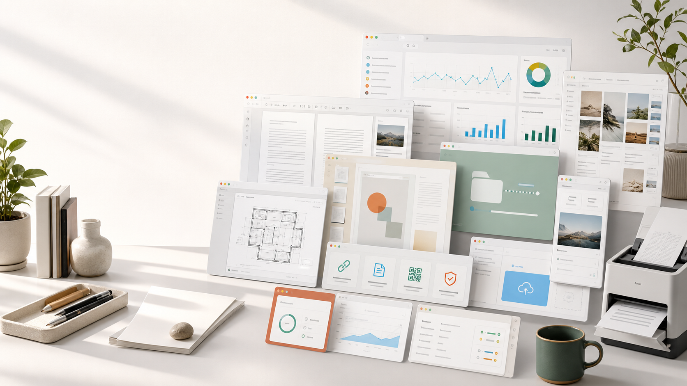

PDF와 문서를 다루는 제품군
변환, 추출, 캡처, 증빙처럼 사무 업무에서 자주 반복되는 흐름을 짧게 줄입니다.
Independent software portfolio
PDF 변환, 문서 추출, 데이터 리포트, 콘텐츠 운영, 파일 공유, 앱 점검까지. 업무 흐름에서 반복되는 작은 불편을 서비스로 정리해 온 프로젝트들입니다.

Portfolio, not a spec sheet
변환, 추출, 캡처, 증빙처럼 사무 업무에서 자주 반복되는 흐름을 짧게 줄입니다.
데이터와 콘텐츠를 업로드하면 사람이 바로 검수하고 활용할 수 있는 형태로 정리합니다.
링크 단축, 파일 전송, 앱 점검처럼 명확한 문제 하나를 빠르게 해결하는 도구입니다.
Selected work
PDF 합치기, 분할, 압축, 변환 같은 작업을 한곳에서 처리하는 PDF 유틸리티 허브.
PDF 페이지를 이미지로 빠르게 바꿔 공유, 업로드, 미리보기 작업을 간단하게 만드는 도구.
파일을 간단한 링크로 주고받고, 임시 공유 흐름을 가볍게 처리하는 파일 전송 서비스.
긴 링크를 짧고 관리하기 쉬운 주소로 정리하는 단축 URL 서비스.
엑셀과 CSV 데이터를 업로드하면 차트와 한국어 보고서로 정리해주는 업무 리포트 서비스.
찬성, 반대, 중립 의견을 균형 있게 모아 이슈를 차분히 살펴보는 토론 커뮤니티.
계약서와 PDF 문서를 업로드해 핵심 항목을 구조화하고 만료 알림까지 관리하는 문서 서비스.
광고 계정과 캠페인 문제를 빠르게 진단하고 복구 흐름을 정리하는 한국형 광고 회복 도구.
블로그, SNS, 뉴스레터 콘텐츠를 주간 단위로 준비하고 검수하는 콘텐츠 운영 서비스.
화면, 문서, 증빙 자료를 저장하고 제출용으로 정리하는 캡처 및 증빙 관리 도구.
앱 상태와 외부 노출 정보를 점검해 이상 신호를 빠르게 확인하는 모니터링 도구.
파일, 문서, 링크를 점검하고 위험 신호를 한눈에 보여주는 스캐너형 점검 도구.